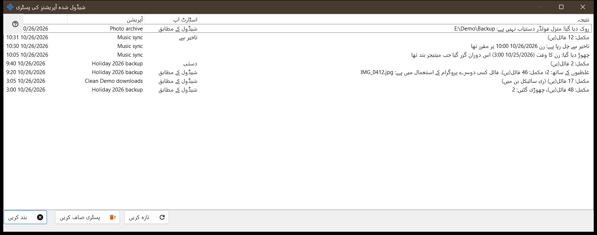
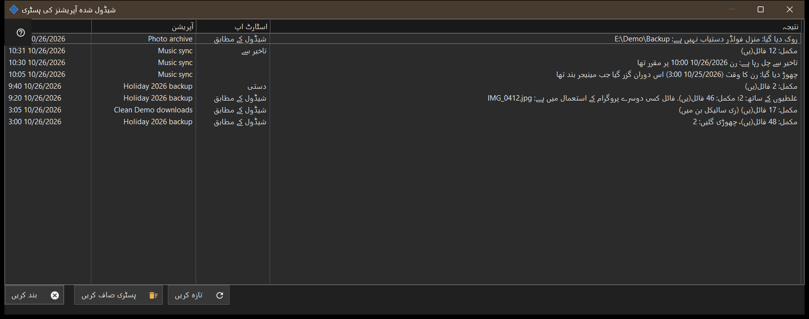

شیڈول شدہ آپریشنز کی ہسٹری
یہ کس مقصد کے لیے ہے
جرنل میں درج شیڈول شدہ فائل آپریشنز کے حالیہ رنز اور نوٹس دکھاتا ہے۔ شیڈول شدہ فائل آپریشنز Share Manager کے ساتھ ہی انسٹال ہوتے ہیں - ایک ہی پیکیج، الگ ڈاؤن لوڈ کے بغیر اور Windows سروس کے بغیر - اور اس وقت تک چلتے ہیں جب تک Share Manager آپ کے سائن اِن سیشن میں چل رہا ہو؛ انہیں فولڈر شیئرنگ، سرور، کھلے پورٹ یا ایڈمنسٹریٹر حقوق کی ضرورت نہیں۔ یہ شیڈولڈ آپریشنز ونڈو میں اور Share Manager کی ترتیبات کے صفحے شیڈول شدہ فائل آپریشنز کی ہسٹری.. سے کھلتا ہے۔


اس ترتیب میں
- فہرست پڑھیں: وقت، آپریشن، اسٹارٹ اپ اور نتیجہ۔
- اگر نتیجہ لمبا ہو تو ونڈو چوڑی کریں۔
- جرنل دوبارہ پڑھنے کے لیے تازہ کریں دبائیں۔
- اسے خالی کرنے کے لیے ہسٹری صاف کریں دبائیں اور تصدیق کریں۔
- بند کریں دبائیں۔
عناصر
کالم
وقت، آپریشن (اس کا نام)، اسٹارٹ اپ اور نتیجہ۔ اسٹارٹ اپ شیڈول کے مطابق، دستی، سب چلائیں یا تاخیر سے ہے، اور نوٹ کی صورت میں خالی رہتا ہے۔ ونڈو کھلتے وقت اور تازہ کریں پر جرنل کی تازہ ترین 200 اندراجات پڑھتی ہے؛ یہ خود بخود اپ ڈیٹ نہیں ہوتی۔
رن کے نتائج
مکمل: N فائل(یں)؛ جب کچھ فائلیں چھوڑی گئی ہوں تو اس میں ، چھوڑی گئیں: M کا اضافہ ہوتا ہے، اور حذف کرنے کی صورت میں (ری سائیکل بن میں) کا بھی۔ غلطیوں کے ساتھ: N؛ مکمل: M فائل(یں) اور اس کے بعد پہلی وجہ، مثلاً فائل استعمال میں ہے، رسائی نہیں ہے، فائل نہیں ملی یا بدل گئی، یا ڈسک بھر گئی۔ روک دیا گیا: .. جب کوئی رکاوٹ رن کو ختم کر دے، مثلاً ناقابل رسائی فولڈر، ایسا وسیلہ جس کا پاس ورڈ محفوظ نہیں یا جس کی سرور کلید کی تصدیق نہیں ہوئی، یا آف لائن ڈیوائس۔ شروع نہیں ہوا: .. جب تعریف مسترد ہو جائے، چھوڑ دیا گیا: .. اور منقطع۔ جرنل کوڈ رکھتا ہے، خام خرابی کا متن نہیں، اس لیے الفاظ موجودہ زبان کے مطابق ہوتے ہیں۔ جب ایک فریق Google Drive ہو تو وجہ Google Drive سے رابطہ نہ ہونا، اس پر جگہ نہ ہونا، اس سے سائن آؤٹ ہونا یا پیکٹ کی حد سے بڑی فائل بھی ہو سکتی ہے۔
نوٹس
بغیر اسٹارٹ اپ والی قطار نوٹ ہوتی ہے: چھوڑ دیا گیا: رن کا وقت (..) اس دوران گزر گیا جب مینیجر بند تھا؛ تاخیر سے چل رہا ہے: رن .. پر مقرر تھا؛ مسترد: یہ آپریشن پہلے سے چل رہا ہے یا قطار میں انتظار کر رہا ہے؛ اور دوبارہ شروع ہو گیا: رکنے کی وجہ دور ہو گئی۔
ہسٹری صاف کریں
پوچھتا ہے: شیڈول شدہ آپریشنز کی ہسٹری صاف کریں؟ آپریشنز اور ان کے شیڈول تبدیل نہیں ہوں گے۔ ڈیفالٹ جواب نہیں ہے۔ یہ صرف اس جرنل کو خالی کرتا ہے؛ آپریشنز اور ان کے شیڈول باقی رہتے ہیں۔ جب ہسٹری خالی ہو تو بٹن غیر فعال رہتا ہے۔
مینیجر کی ترتیبات · SFTP اشتراک کی ترتیبات · ایکسچینج سرور کی ترتیبات